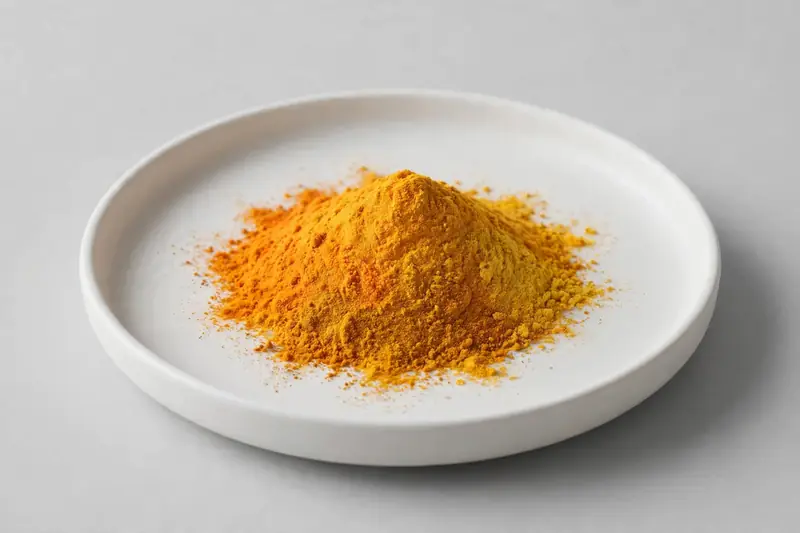

Curcuma longa — Rhizome-derived Curcuma longa extract standardized to curcuminoids — for supplement, functional food, and beverage brands formulating inflammation-positioned and color-stable products.

Overview
Turmeric extract is among the highest-volume botanical ingredients globally, standardized to curcuminoids for supplement and functional food applications. Buyers source it for capsules, gummies, beverages, and powder blends where a documented curcuminoid level is required. As a trading company, we work with partner producers and confirm supply against your target specification — we don't present confirmed stock specs or hold certifications we can't document.
Specifications below reflect commonly requested options in the market — not a stock list. Share your target spec and we'll confirm exactly what we can supply, honestly.
| Specification | Details |
|---|---|
| Botanical identity | Curcuma longa, rhizome |
| Marker compound | Curcuminoids — commonly requested: 95% curcuminoids (HPLC); also turmeric powder ratios |
| Appearance | Bright orange-yellow to deep yellow-orange fine powder |
| Analytical methods | Methods referenced in buyer specifications: HPLC |
| Mesh size | Typically 80–100 mesh (confirm per inquiry) |
| Testing | COA/TDS arranged on request; scope agreed per your spec |
Applications
Documentation
We document what the partner producer supplies against your specification — no blanket certification claims. Confirm your curcuminoid target and test method, and we'll state exactly what documentation can be arranged.
FAQ
Related products
Curcumin
Key marker: Curcuminoids 95% HPLC
View specs →Curcuma longa
Key marker: Turmerone
View specs →Withania somnifera
Key marker: Withanolides
View specs →Rhodiola rosea
Key marker: Rosavins & Salidroside
View specs →Silybum marianum
Key marker: Silymarin
View specs →Ginkgo biloba
Key marker: Flavone Glycosides
View specs →Panax ginseng
Key marker: Ginsenosides
View specs →Send your target spec and volumes — we'll respond with a tailored quotation.
Request a Quote